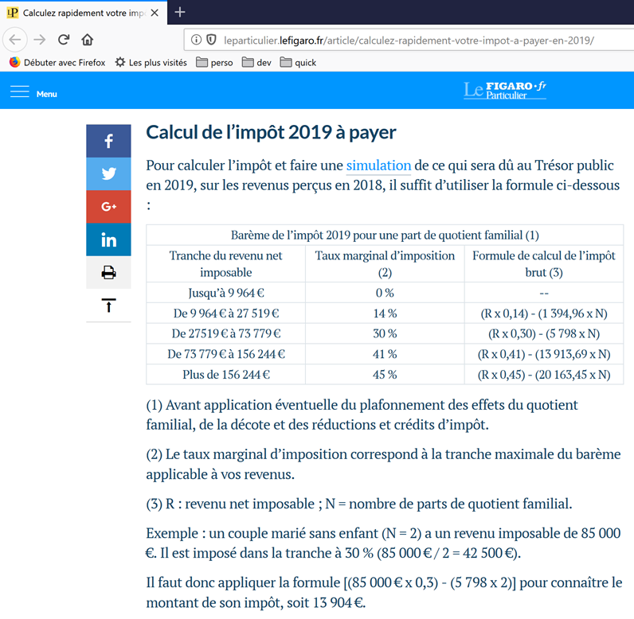

8. Esercizio pratico – versione 1
8.1. Il problema

La tabella sopra riportata consente di calcolare l’imposta nel caso semplificato di un contribuente che abbia da dichiarare solo il proprio stipendio. Come indicato nella nota (1), l’imposta così calcolata è l’imposta al lordo di tre meccanismi:
- il tetto massimo del quoziente familiare, che si applica ai redditi elevati;
- lo sconto e la riduzione d’imposta che si applicano ai redditi bassi;
Pertanto, il calcolo dell’imposta comprende le seguenti fasi [http://impotsurlerevenu.org/comprendre-le-calcul-de-l-impot/1217-calcul-de-l-impot-2019.php]:

Ci proponiamo di scrivere un programma che consenta di calcolare l’imposta di un contribuente nel caso semplificato di un contribuente che abbia da dichiarare solo il proprio stipendio:
8.1.1. Calcolo dell’imposta lorda
L’imposta lorda può essere calcolata nel modo seguente:
Si calcola innanzitutto il numero di quote del contribuente:
- ogni genitore apporta 1 quota;
- i primi due figli apportano ciascuno 1/2 quota;
- i figli successivi apportano una quota ciascuno:
Il numero di quote è quindi:
- nbParts=1+nbEnfants*0,5+(nbEnfants-2)*0,5 se il dipendente non è sposato;
- nbParts = 2 + nbEnfants * 0,5 + (nbEnfants - 2) * 0,5 se è sposato;
- dove nbEnfants è il numero dei suoi figli;
- si calcola il reddito imponibile R=0,9*S dove S è lo stipendio annuale;
- si calcola il quoziente familiare QF = R / nbParts;
- si calcola l’imposta lorda I in base ai seguenti dati (2019):
9964 | 0 | 0 |
27519 | 0,14 | 1394,96 |
73779 | 0,3 | 5798 |
156.244 | 0,4 | 13913,69 |
0 | 0,45 | 20163,45 |
Ogni riga presenta 3 campi: champ1, champ2, champ3. Per calcolare l'imposta I, si cerca la prima riga in cui QF ≤ campo1 e si prendono i valori di quella riga. Ad esempio, per un dipendente sposato con due figli e uno stipendio annuo S di 50.000 euro:
Reddito imponibile: R=0,9*S=45000
Numero di quote: nbParts=2+2*0,5=3
Quoziente familiare: QF = 45.000 / 3 = 15.000
La prima riga in cui QF <= campo1 è la seguente:
L’imposta I è quindi pari a 0,14*R – 1394,96*nbParts=[0,14*45000-1394,96*3]=2115. L’imposta viene arrotondata all’euro inferiore.
Se la relazione QF <= campo1 è vera fin dalla prima riga, allora l’imposta è pari a zero.
Se QF è tale che la relazione QF<=campo1 non è mai soddisfatta, allora vengono utilizzati i coefficienti dell’ultima riga. In questo caso:
il che dà l’imposta lorda I=0,45*R – 20163,45*nbParts.
8.1.2. Limite massimo del quoziente familiare

Per verificare se si applica il limite massimo del quoziente familiare QF, si ricalcola l’imposta lorda senza considerare i figli. Sempre per il lavoratore dipendente sposato con due figli e uno stipendio annuo S di 50.000 euro:
Reddito imponibile: R=0,9*S=45.000
Numero di quote: nbParts=2 (i figli non vengono più conteggiati)
Quoziente familiare: QF = 45.000 / 2 = 22.500
La prima riga in cui QF <= campo1 è la seguente:
L’imposta I è quindi pari a 0,14*R – 1394,96*nbParts=[0,14*45000-1394,96*2]=3510.
Guadagno massimo legato ai figli: 1551 * 2 = 3102 euro
Imposta minima: 3510 – 3102 = 408 euro
L’imposta lorda con 3 quote, già calcolata pari a 2115 euro, è superiore all’imposta minima di 408 euro, pertanto in questo caso non si applica il limite massimo familiare.
In generale, l’imposta lorda è sup(imposta1, imposta2) dove:
- [impôt1]: è l’imposta lorda calcolata con i figli;
- [impôt2]: è l’imposta lorda calcolata senza i figli e ridotta del guadagno massimo (in questo caso 1551 euro per mezza quota) relativo ai figli;
8.1.3. Calcolo della riduzione

Sempre per il dipendente sposato con due figli e uno stipendio annuo S di 50.000 euro:
L’imposta lorda (2115) risultante dalla fase precedente è inferiore a 2627 euro per una coppia (1595 euro per un single): si applica quindi la riduzione. Essa si ottiene con il seguente calcolo:
riduzione = soglia (coppia = 1970 / single = 1196) - 0,75 * imposta lorda
riduzione = 1970 - 0,75 * 2115 = 383,75, arrotondato a 384 euro.
Nuova imposta lorda = 2115 - 384 = 1731 euro
8.1.4. Calcolo della riduzione d’imposta

Al di sotto di una certa soglia, viene applicata una riduzione del 20% sull’imposta lorda risultante dai calcoli precedenti. Nel 2019, le soglie sono le seguenti:
- single: 21.037 euro;
- coppia: 42.074 euro; (la cifra 37.968 utilizzata nell’esempio sopra riportato sembra errata);
A questa soglia va aggiunto il valore: 3.797 * (numero di mezze quote apportate dai figli).
Sempre per il lavoratore dipendente sposato con due figli e uno stipendio annuo S di 50.000 euro:
- il suo reddito imponibile (45.000 euro) è inferiore alla soglia (42.074 + 2 × 3.797) = 49.668 euro;
- ha quindi diritto a una riduzione del 20% della sua imposta: 1731 * 0,2 = 346,2 euro, arrotondati a 347 euro;
- l’imposta lorda del contribuente risulta pari a: 1731 - 347 = 1384 euro;
8.1.5. Calcolo dell’imposta netta
Il nostro calcolo si ferma qui: l’imposta netta da pagare sarà di 1384 euro. In realtà, il contribuente può beneficiare di altre riduzioni, in particolare per le donazioni a enti di interesse pubblico o generale.
8.1.6. Caso dei redditi elevati
Il nostro esempio precedente corrisponde alla maggior parte dei casi dei lavoratori dipendenti. Tuttavia, il calcolo dell’imposta è diverso nel caso dei redditi elevati.
8.1.6.1. Limite massimo della riduzione del 10% sul reddito annuo
Nella maggior parte dei casi, il reddito imponibile si ottiene con la formula: R=0,9*S, dove S è lo stipendio annuale. Si parla in questo caso di riduzione del 10%. Tale riduzione è soggetta a un limite massimo. Nel 2019:
- non può superare i 12.502 euro;
- non può essere inferiore a 437 euro;
Prendiamo il caso di un dipendente non sposato senza figli con uno stipendio annuo di 200.000 euro:
- la riduzione del 10% è pari a 20.000 euro > 12.502 euro. Viene quindi ridotta a 12.502 euro;
8.1.6.2. Limite massimo del quoziente familiare
Consideriamo un caso in cui si applica il limite massimo del quoziente familiare illustrato nel paragrafo |Limite massimo del quoziente familiare|. Prendiamo il caso di una coppia con tre figli e un reddito annuo di 100.000 euro. Ripassiamo le fasi del calcolo:
- la detrazione del 10% è pari a 10.000 euro < 12.502 euro. Il reddito imponibile R è quindi pari a 100.000 - 10.000 = 90.000 euro;
- la coppia ha nbParts = 2 + 0,5 × 2 + 1 = 4 quote;
- il suo quoziente familiare è quindi QF = R / nbParts = 90.000 / 4 = 22.500 euro;
- la sua imposta lorda I1 con figli è pari a I1=0,14*90.000-1.394,96*4= 7.020 euro;
- la sua imposta lorda I2 senza figli:
- QF = 90.000 / 2 = 45.000 euro;
- I2 = 0,3 × 90.000 − 5.798 × 2 = 15.404 euro;
- la regola del limite massimo del quoziente familiare stabilisce che il beneficio derivante dai figli non possa superare (1551*4 mezze quote)=6204 euro. In questo caso, invece, è pari a I2-I1=15404-7020= 8384 euro, quindi superiore a 6204 euro;
- l’imposta lorda viene quindi ricalcolata come I3 = I2-6204 = 15.404 - 6.204 = 9.200 euro;
Questa coppia non beneficerà né di uno sconto né di una riduzione e la sua imposta finale sarà di 9200 euro.
8.1.7. Dati ufficiali
Il calcolo dell’imposta è complesso. Nel corso del documento, le simulazioni saranno effettuate utilizzando i seguenti esempi. I risultati provengono dal simulatore dell’amministrazione fiscale |https://www3.impots.gouv.fr/simulateur/calcul_impot/2019/simplifie/index.htm|:
Contribuente | Risultati ufficiali | Risultati dell’algoritmo del documento |
Coppia con 2 figli e un reddito annuo di 55555 euro | Imposta = 2815 euro Aliquota fiscale = 14 % | Imposta = 2814 euro Aliquota fiscale = 14 % |
Coppia con 2 figli e un reddito annuo di 50.000 euro | Imposta = 1.385 euro Sconto = 720 euro Riduzione = 0 euro Aliquota fiscale = 14 % | Imposta = 1.384 euro Sconto = 384 euro Sconto = 347 euro Aliquota fiscale = 14 % |
Coppia con 3 figli e un reddito annuo di 50.000 euro | Imposta = 0 euro Sconto = 384 euro Sconto = 346 euro Aliquota fiscale = 14 % | Imposta = 0 euro sconto = 720 euro Riduzione = 0 euro Aliquota fiscale = 14 % |
Celibe con 2 figli e un reddito annuo di 100.000 euro | Imposta = 19.884 euro Sconto = 0 euro Sconto = 0 euro Aliquota fiscale = 41 % | Imposta = 19.884 euro Maggiorazione = 4.480 euro sconto = 0 euro Riduzione = 0 euro Aliquota fiscale = 41 % |
Celibe con 3 figli e un reddito annuo di 100.000 euro | Imposta = 16.782 euro Sconto = 0 euro Sconto = 0 euro Aliquota fiscale = 41 % | Imposta = 16.782 euro Maggiorazione = 7.176 euro sconto = 0 euro Riduzione = 0 euro Aliquota fiscale = 41 % |
Coppia con 3 figli e un reddito annuo di 100.000 euro | Imposta = 9.200 euro Sconto = 0 euro Sconto = 0 euro Aliquota fiscale = 30 % | Imposta = 9.200 euro Maggiorazione = 2180 euro sconto = 0 euro Riduzione = 0 euro Aliquota fiscale = 30 % |
Coppia con 5 figli e un reddito annuo di 100.000 euro | Imposta = 4.230 euro Sconto = 0 euro Sconto = 0 euro Aliquota fiscale = 14 % | Imposta = 4.230 euro Sconto = 0 euro Riduzione = 0 euro Aliquota fiscale = 14 % |
Celibe senza figli e con un reddito annuo di 100.000 euro | Imposta = 22.986 euro Sconto = 0 euro Sconto = 0 euro Aliquota fiscale = 41% | Imposta = 22.986 euro Maggiorazione = 0 euro Sconto = 0 euro Riduzione = 0 euro Aliquota fiscale = 41 % |
Coppia con 2 figli e un reddito annuo di 30.000 euro | Imposta = 0 euro Sconto = 0 euro Sconto = 0 euro Aliquota fiscale = 0 % | Imposta = 0 euro Sconto = 0 euro Riduzione = 0 euro Aliquota fiscale = 0 % |
Celibe senza figli e con un reddito annuo di 200.000 euro | Imposta = 64.211 euro Sconto = 0 euro Sconto = 0 euro Aliquota fiscale = 45 % | Imposta = 64.210 euro Maggiorazione = 7.498 euro sconto = 0 euro Riduzione = 0 euro Aliquota fiscale = 45 % |
Coppia con 3 figli e un reddito annuo di 200.000 euro | Imposta = 42.843 euro Sconto = 0 euro Sconto = 0 euro Aliquota fiscale = 41% | Imposta = 42.842 euro Maggiorazione = 17.283 euro sconto = 0 euro Riduzione = 0 euro Aliquota fiscale = 41 % |
In questo caso, si definisce «sovrattassa» l’importo aggiuntivo che i redditi elevati devono versare a causa di due fenomeni:
- il limite massimo del 10% sulla detrazione sui redditi annuali;
- il limite massimo del quoziente familiare;
Questo indicatore non ha potuto essere verificato poiché il simulatore dell’amministrazione fiscale non lo fornisce.
Si nota che l’algoritmo del documento fornisce ogni volta un’imposta corretta, con tuttavia un margine di errore di 1 euro. Questo margine di errore deriva dagli arrotondamenti. Tutte le somme di denaro vengono arrotondate a volte all’euro superiore, a volte all’euro inferiore. Poiché non conoscevo le regole ufficiali, gli importi dell’algoritmo del documento sono stati arrotondati:
- all’euro superiore per gli sconti e le riduzioni;
- all’euro inferiore per i sovrapprezzi e l’imposta finale;
Svilupperemo diverse versioni dell’applicazione per il calcolo dell’imposta.
8.2. Versione 1

8.2.1. Lo script principale
Presentiamo un primo programma in cui:
- i dati necessari al calcolo delle imposte sono hardcoded nel codice sotto forma di elenchi e costanti;
- i dati dei contribuenti (stato civile, figli, stipendio) si trovano in un primo file di testo [taxpayersdata.txt];
- i risultati del calcolo dell'imposta (stato civile, figli, stipendio, imposta) sono memorizzati in un secondo file di testo [résultats.txt];
Lo script [v-01/main.py] è il seguente:
# moduli
import sys
from impots.v01.shared.impôts_module_01 import *
# main -----------------------
# costanti
# file dei contribuenti
DATA = "./data/taxpayersdata.txt"
# file dei risultati
RESULTATS = "./data/résultats.txt"
try:
# lettura dei dati dei contribuenti
tax_payers = get_taxpayers_data(DATA)
# elenco dei risultati
results = []
# calcolo dell'imposta dei contribuenti
for tax_payer in tax_payers:
# il calcolo dell'imposta restituisce un dizionario di chiavi
# ['marié', 'enfants', 'salaire', 'impôt', 'surcôte', 'décôte', 'réduction', 'taux']
result = calcul_impôt(tax_payer['marié'], tax_payer['enfants'], tax_payer['salaire'])
# il dizionario viene aggiunto all'elenco dei risultati
results.append(result)
# i risultati vengono salvati
record_results(RESULTATS, results)
except BaseException as erreur:
# possono verificarsi diversi errori: file mancante, contenuto del file errato
# viene visualizzato l'errore e si esce dall'applicazione
print(f"l'erreur suivante s'est produite : {erreur}]\n")
sys.exit()
Note
- riga 4: si utilizza il modulo [impots.v01.modules.impôts_module_01]. Si ricorda che questo percorso è misurato a partire dalla radice del progetto PyCharm;
- riga 10: il file [data/taxpayersdata.txt] è il seguente:
Ogni riga rappresenta una tupla di tre elementi [marié / pacsé ou pas, nombre d'enfants, salaire annuel en euros].
- riga 12: il file in cui verranno inseriti i risultati del calcolo dell’imposta per ciascuno dei contribuenti del file [taxpayersdata.txt]. Avrà il seguente contenuto:
- riga 16: si recuperano i dati dei contribuenti contenuti in [taxpayersdata.txt]. Si recupera un elenco di dizionari di chiavi [marié, enfants, salaire], dove ogni dizionario rappresenta un contribuente;
- righe 17-25: si calcola l’imposta dei contribuenti dell’elenco [taxPayers]. Si recupera un elenco [results], in cui ogni elemento è a sua volta un dizionario di chiavi [marié, enfants, salaire, impôt, surcôte, décôte, réduction, taux];
- riga 27: l'elenco [results] dei risultati viene salvato nel file [résultats.txt] nella forma sopra indicata;
- righe 28-32: vengono intercettate tutte le eccezioni che potrebbero verificarsi nel modulo [impots.v01.modules.impôts_module_01];
Descriveremo ora in dettaglio le tre funzioni utilizzate dallo script [main]:
- [get_taxpayers_data]: per leggere i dati dei contribuenti;
- [calcul_impôt]: per calcolare le imposte dei contribuenti;
- [record_results]: per salvare i risultati in un file di testo;
Tutte queste funzioni si trovano nel modulo [impots.modules.impôts_module_01].
8.2.2. Il modulo [impots.v01.shared.impôts_module_01]
Le funzioni necessarie per il calcolo dell’imposta sono state raggruppate nel modulo [impots.v01.shared.impôts_module_01]:

- in [1]: definizione delle costanti per il calcolo dell'imposta;
- nel modulo [2]: l'elenco delle funzioni del modulo;
8.2.3. La funzione [get_taxpayers_data]
La funzione [get_taxpayers_data] è la seguente:
# importazioni
import codecs
…
# lettura dei dati dei contribuenti
# ----------------------------------------
def get_taxpayers_data(taxpayers_filename: str) -> list:
# lettura dei dati dei contribuenti
file = None
try:
# l'elenco dei contribuenti
taxpayers = []
# apertura del file
file = codecs.open(taxpayers_filename, "r", "utf8")
# si legge la prima riga del file dei contribuenti
ligne = file.readline().strip()
# finché rimane una riga da elaborare
while ligne != '':
# si recuperano i 3 campi «coniuge», «figli» e «stipendio» che compongono la riga
(marié, enfants, salaire) = ligne.split(",")
# li si aggiunge all’elenco dei contribuenti
taxpayers.append({'marié': marié.strip().lower(), 'enfants': int(enfants), 'salaire': int(salaire)})
# si legge una nuova riga dal file dei contribuenti
ligne = file.readline().strip()
# si restituisce il risultato
return taxpayers
finally:
# si chiude il file se era stato aperto
if file:
file.close()
Note
- riga 7: [taxpayers_filename] è il nome del file da elaborare. La funzione restituisce un elenco;
- righe 18-24: il ciclo di elaborazione delle righe [marié, enfants, salaire] del file di testo;
- riga 20: vengono recuperati i tre elementi della riga. Si presume qui che la riga sia sintatticamente corretta, ovvero che contenga effettivamente i tre elementi previsti;
- riga 22: si costruisce un dizionario con le chiavi [marié, enfants, salaire] e tale dizionario viene aggiunto alla lista [taxPayers];
- riga 26: una volta elaborato il file, viene restituita la lista [taxPayers];
- righe 10-30: si noti che non è stata inserita la clausola [catch] nel [try] della riga 10. La clausola [catch] non è obbligatoria. Alla riga 27 è stata inserita una clausola [finally] per chiudere il file di testo in ogni caso, indipendentemente dalla presenza o meno di un errore;
- questa struttura try / finally lascia passare un'eventuale eccezione (non c'è alcun catch). Tale eccezione verrà segnalata allo script principale [main], che si interromperà e visualizzerà l'eccezione (cfr. paragrafo |Lo script principale|). Questo meccanismo è stato utilizzato per la maggior parte delle funzioni del modulo;
8.2.4. La funzione [calcul_impôt]
La funzione [calcul_impôt] è la seguente:
# importazioni
import codecs
import math
# scaglioni dell'imposta 2019
limites = [9964, 27519, 73779, 156244, 0]
coeffr = [0, 0.14, 0.3, 0.41, 0.45]
coeffn = [0, 1394.96, 5798, 13913.69, 20163.45]
# costanti per il calcolo dell'imposta 2019
PLAFOND_QF_DEMI_PART = 1551
PLAFOND_REVENUS_CELIBATAIRE_POUR_REDUCTION = 21037
PLAFOND_REVENUS_COUPLE_POUR_REDUCTION = 42074
VALEUR_REDUC_DEMI_PART = 3797
PLAFOND_DECOTE_CELIBATAIRE = 1196
PLAFOND_DECOTE_COUPLE = 1970
PLAFOND_IMPOT_COUPLE_POUR_DECOTE = 2627
PLAFOND_IMPOT_CELIBATAIRE_POUR_DECOTE = 1595
ABATTEMENT_DIXPOURCENT_MAX = 12502
ABATTEMENT_DIXPOURCENT_MIN = 437
…
# calcolo dell'imposta
# ----------------------------------------
def calcul_impôt(marié: str, enfants: int, salaire: int) -> dict:
# coniugato: sì, no
# figli: numero di figli
# stipendio: stipendio annuo
# limiti, coeffr, coeffn: le tabelle dei dati che consentono il calcolo dell’imposta
#
# calcolo dell’imposta con figli
result1 = calcul_impôt_2(marié, enfants, salaire)
impot1 = result1["impôt"]
# calcolo dell'imposta senza figli
if enfants != 0:
result2 = calcul_impôt_2(marié, 0, salaire)
impot2 = result2["impôt"]
# applicazione del limite massimo del quoziente familiare
if enfants < 3:
# PLAFOND_QF_DEMI_PART euro per i primi 2 figli
impot2 = impot2 - enfants * PLAFOND_QF_DEMI_PART
else:
# PLAFOND_QF_DEMI_PART euro per i primi 2 figli, il doppio per i successivi
impot2 = impot2 - 2 * PLAFOND_QF_DEMI_PART - (enfants - 2) * 2 * PLAFOND_QF_DEMI_PART
else:
impot2 = impot1
result2 = result1
# si considera l’imposta più elevata con l’aliquota e la maggiorazione corrispondenti
if impot1 > impot2:
impot = impot1
taux = result1["taux"]
surcôte = result1["surcôte"]
else:
surcôte = impot2 - impot1 + result2["surcôte"]
impot = impot2
taux = result2["taux"]
# calcolo di un’eventuale riduzione
décôte = get_décôte(marié, salaire, impot)
impot -= décôte
# calcolo di un’eventuale riduzione delle imposte
réduction = get_réduction(marié, salaire, enfants, impot)
impot -= réduction
# risultato
return {"marié": marié, "enfants": enfants, "salaire": salaire, "impôt": math.floor(impot), "surcôte": surcôte,
"décôte": décôte, "réduction": réduction, "taux": taux}
Note
- righe 6-8: le fasce di imposta (cfr. paragrafo |Calcolo dell’imposta lorda|);
- righe 11-20: le costanti del calcolo dell’imposta;
- si noti che gli elementi inizializzati alle righe 5-20 saranno globali per le funzioni che descriveremo. Sono quindi noti fintanto che la funzione che li utilizza non dichiara variabili con gli stessi nomi;
- i valori delle righe 5-20 cambiano ogni anno. Qui si tratta dei dati relativi al 2019;
- riga 25: la funzione [calcul_impôt] riceve tre parametri:
- [marié]: sì/no, indica se il contribuente è sposato o convive in un'unione civile;
- [enfants]: il numero dei suoi figli;
- [salaire]: il suo stipendio annuale in euro;
- righe 31-33: calcolo dell’imposta tenendo conto dei figli;
- righe 34-47: queste righe applicano il limite massimo del quoziente familiare (cfr. paragrafo |Limite massimo del quoziente familiare|);
- righe 49-57: queste righe calcolano l’aliquota fiscale del contribuente e un’eventuale maggiorazione (cfr. paragrafo |Caso dei redditi elevati|);
- righe 59-61: calcolo di un’eventuale riduzione (cfr. paragrafo |Calcolo della riduzione|);
- righe 62-64: calcolo di un’eventuale riduzione dell’imposta dovuta (cfr. paragrafo |Calcolo della riduzione d’imposta|);
L’algoritmo è piuttosto complesso e non lo approfondiremo oltre quanto indicato nei commenti. L’algoritmo implementa la modalità di calcolo dell’imposta descritta nel paragrafo |Il problema|.
8.2.5. La funzione [calcul_impôt_2]
La funzione [calcul_impôt] richiama la seguente funzione [calcul_impôt_2]:
def calcul_impôt_2(marié: str, enfants: int, salaire: int) -> list:
# coniugato: sì, no
# figli: numero di figli
# stipendio: stipendio annuo
# limiti, coeffr, coeffn: le tabelle dei dati che consentono il calcolo dell'imposta
#
# numero di quote
marié = marié.strip().lower()
if marié == "oui":
nb_parts = enfants / 2 + 2
else:
nb_parts = enfants / 2 + 1
# 1 quota per ogni figlio a partire dal terzo
if enfants >= 3:
# mezza quota in più per ogni figlio a partire dal terzo
nb_parts += 0.5 * (enfants - 2)
# reddito imponibile
revenu_imposable = get_revenu_imposable(salaire)
# maggiorazione
surcôte = math.floor(revenu_imposable - 0.9 * salaire)
# per problemi di arrotondamento
if surcôte < 0:
surcôte = 0
# quoziente familiare
quotient = revenu_imposable / nb_parts
# viene inserito alla fine della tabella dei limiti per interrompere il ciclo successivo
limites[len(limites) - 1] = quotient
# calcolo dell'imposta
i = 0
while quotient > limites[i]:
i += 1
# dato che il quoziente è stato inserito alla fine della tabella dei limiti, il ciclo precedente
# non può andare oltre i limiti della tabella
# ora è possibile calcolare l’imposta
impôt = math.floor(revenu_imposable * coeffr[i] - nb_parts * coeffn[i])
# risultato
return {"impôt": impôt, "surcôte": surcôte, "taux": coeffr[i]}
Questo algoritmo è stato descritto nel paragrafo 8.1.1.
8.2.6. La funzione [get_décôte]
La funzione [get_décôte] implementa il calcolo dell'eventuale riduzione dell'imposta (paragrafo |Calcolo della riduzione|):
# calcola un'eventuale riduzione
def get_décôte(marié: str, salaire: int, impots: int) -> int:
# inizialmente, uno sconto pari a zero
décôte = 0
# importo massimo dell'imposta per beneficiare della riduzione
plafond_impôt_pour_décôte = PLAFOND_IMPOT_COUPLE_POUR_DECOTE if marié == "oui" else PLAFOND_IMPOT_CELIBATAIRE_POUR_DECOTE
if impots < plafond_impôt_pour_décôte:
# importo massimo della riduzione
plafond_décôte = PLAFOND_DECOTE_COUPLE if marié == "oui" else PLAFOND_DECOTE_CELIBATAIRE
# sconto teorico
décôte = plafond_décôte - 0.75 * impots
# la riduzione non può superare l'importo dell'imposta
if décôte > impots:
décôte = impots
# nessuna riduzione <0
if décôte < 0:
décôte = 0
# risultato
return math.ceil(décôte)
8.2.7. La funzione [get_réduction]
La funzione [get_réduction] implementa il calcolo dell'eventuale riduzione dell'imposta dovuta (paragrafo |Calcolo della riduzione d'imposta|):
# calcola un'eventuale riduzione
def get_réduction(marié: str, salaire: int, enfants: int, impots: int) -> int:
# il limite massimo di reddito per avere diritto alla riduzione del 20%
plafond_revenu_pour_réduction = PLAFOND_REVENUS_COUPLE_POUR_REDUCTION if marié == "oui" else PLAFOND_REVENUS_CELIBATAIRE_POUR_REDUCTION
plafond_revenu_pour_réduction += enfants * VALEUR_REDUC_DEMI_PART
if enfants > 2:
plafond_revenu_pour_réduction += (enfants - 2) * VALEUR_REDUC_DEMI_PART
# reddito imponibile
revenu_imposable = get_revenu_imposable(salaire)
# riduzione
réduction = 0
if revenu_imposable < plafond_revenu_pour_réduction:
# riduzione del 20%
réduction = 0.2 * impots
# risultato
return math.ceil(réduction)
8.2.8. La funzione [get_revenu_imposable]
La funzione [get_revenu_imposable] calcola il reddito imponibile a partire dallo stipendio annuale:
# revenu_imposable = salaireAnnuel - franchigia
# la detrazione ha un valore minimo e uno massimo
# ----------------------------------------
def get_revenu_imposable(salaire: int) -> int:
# detrazione pari al 10% dello stipendio
abattement = 0.1 * salaire
# questa detrazione non può superare ABATTEMENT_DIXPOURCENT_MAX
if abattement > ABATTEMENT_DIXPOURCENT_MAX:
abattement = ABATTEMENT_DIXPOURCENT_MAX
# la detrazione non può essere inferiore a ABATTEMENT_DIXPOURCENT_MIN
if abattement < ABATTEMENT_DIXPOURCENT_MIN:
abattement = ABATTEMENT_DIXPOURCENT_MIN
# reddito imponibile
revenu_imposable = salaire - abattement
# risultato
return math.floor(revenu_imposable)
8.2.9. La funzione [record_results]
La funzione [record_results] salva i risultati del calcolo dell'imposta in un file di testo:
# scrittura dei risultati in un file di testo
# ----------------------------------------
def record_results(results_filename: str, results: list):
# results_filename: il nome del file di testo in cui inserire i risultati
# results: l'elenco dei risultati sotto forma di un elenco di dizionari
# ogni dizionario è scritto su una riga di testo
résultats = None
try:
# apertura del file dei risultati
résultats = codecs.open(results_filename, "w", "utf8")
# elaborazione dei contribuenti
for result in results:
# il risultato viene inserito nel file dei risultati
résultats.write(f"{result}\n")
# contribuente successivo
finally:
# si chiude il file se è stato aperto
if résultats:
résultats.close()
8.2.10. I risultati
Come già detto, con il seguente file dei contribuenti [taxpayersdata.txt]:
lo script [main.py] crea il seguente file [résultats.txt]:
Questi risultati sono conformi ai dati ufficiali riportati nel paragrafo |Dati ufficiali|.
Ora eseguiamo questa versione in una finestra di console:
(venv) C:\Data\st-2020\dev\python\cours-2020\python3-flask-2020\impots\v01>python main.py
Traceback (most recent call last):
File "main.py", line 4, in <module>
from impots.v01.shared.impôts_module_01 import *
ModuleNotFoundError: No module named 'impots'
Si verifica un errore già riscontrato in precedenza: quello relativo al modulo non trovato, in questo caso il modulo [impots]. Ricordiamo che ciò significa che:
- l’interprete Python ha esplorato una per una le cartelle del Python Path;
- in nessuna di esse ha trovato una cartella contenente lo script [impots.py];
La versione [v02] risolverà questo problema.